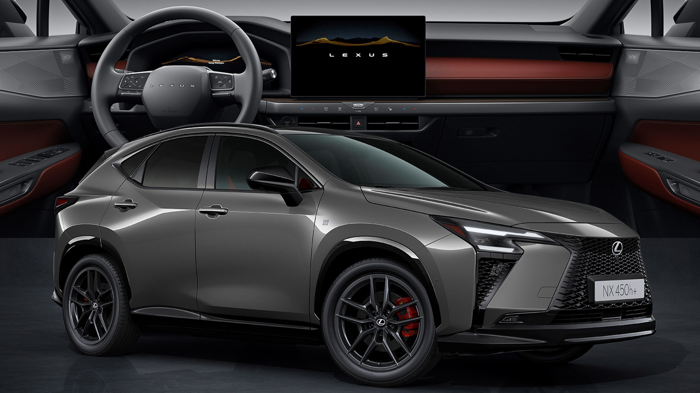

for DC Advanced UX Team.Vivi · Yohan · Libby · Lim Jisu · Katey · Anna
Back Issue

Cockpit
Lexus NX: the buttons that vanish into the dash
The facelifted NX rebuilds its dashboard around a free-standing 14-inch display and haptic controls that literally retract into the trim when idle. Add Sensory Concierge — light, sound, climate and fragrance choreographed in three moods — and Lexus is arguing minimalism doesn't have to mean touchscreen-only.
Denza N8: a 1.1-meter screen, controls in the door handle
BYD's Denza N8 pairs a 1.1-meter panoramic strip under the windshield with a separate 30-inch touchscreen — and moves seat controls into the door handles. Physical button clusters survive, but the layout reads as China's luxury-crossover consensus: one long ribbon, one big slab.
腾势 N8 在风挡下布置 1.1 米贯穿式长屏，再配一块独立的 30 英寸触屏，座椅调节则挪进了门把手。实体按键仍在，但整体布局已是中国豪华 SUV 的共识：一条长带，一块大板。
덴자 N8은 윈드실드 아래 1.1m 파노라마 스트립과 별도의 30인치 터치스크린을 짝지었고, 시트 조절은 도어 핸들 속으로 옮겼다. 물리 버튼은 남았지만 레이아웃은 이미 중국 럭셔리 크로스오버의 공식 — 긴 리본 하나, 큰 판 하나.
Waymo's purpose-built Ojai robotaxi now carries Gemini as an in-cabin assistant — summoned only by tapping its icon, walled off from the driving stack, handling climate, trip questions and local tips. The screen layout even 'choreographs' itself around where you sit. A careful template for AI in shared cabins.
Waymo 的定制车 Ojai 现在把 Gemini 请进座舱：只有点按图标才会唤醒，与驾驶系统完全隔离，负责空调、行程问答和周边推荐。屏幕布局还会按乘客座位自行'编排'。这是共享座舱里 AI 的一个克制范本。
웨이모의 전용 로보택시 오하이에 제미나이가 탑승했다. 아이콘을 눌러야만 깨어나고, 주행 시스템과는 완전히 분리된 채 공조·여정 질문·주변 추천을 맡는다. 화면 레이아웃은 앉은 자리에 맞춰 스스로 재배치된다. 공유 캐빈 속 AI의 절제된 템플릿.
Bandai has squeezed its digital pet onto a finger: a wearable ring with a color LCD keeps the feed-and-care loop alive at glance distance. As screens migrate from pocket to wrist to knuckle, it's a playful case study in how small an interface can get before interaction breaks.
Second White's VtoV 2000 concept restyles the shared-street scooter as a mature product — calmer proportions, enclosed details, less toy. A useful provocation for anyone designing micromobility: what does a kickscooter look like when it stops apologizing for itself?
Second White 的 VtoV 2000 概念把街头滑板车重塑为一件成熟产品——比例更沉稳、细节更收敛、不再像玩具。对做微出行的设计师是个好问题：当滑板车不再自我辩解，它该长什么样？
세컨드 화이트의 VtoV 2000 콘셉트는 공유 킥보드를 성숙한 제품으로 다시 그렸다. 차분한 비례, 감싸인 디테일, 장난감 티 벗기. 마이크로모빌리티 디자이너에게 던지는 질문 — 킥보드가 스스로를 변명하지 않게 되면 어떤 모습일까.
Darius Ou builds type systems from sci-fi and G-code
Singapore designer Darius Ou treats typefaces as systems, not shapes — drawing on speculative fiction, linguistics and the G-code that drives 3D printers to generate letterforms with internal logic. A sharp read on where custom type is heading: rules first, curves second.
新加坡设计师 Darius Ou 把字体当作系统而非造型：从科幻、语言学以及驱动 3D 打印机的 G-code 中取材，生成有内在逻辑的字形。定制字体的走向在此很清楚——先立规则，再画曲线。
싱가포르 디자이너 다리우스 오우는 서체를 형태가 아니라 시스템으로 다룬다. SF와 언어학, 3D 프린터를 움직이는 G-code에서 규칙을 끌어와 내적 논리를 가진 글자를 만든다. 커스텀 타입의 방향 — 곡선보다 규칙이 먼저다.
London studio Art&Graft turned a self-initiated brief into 'In Pursuit of Magic' — a film built by 42 people over two years, made purely to remember why they animate at all. In a year of AI-fast production, a studio spending time this lavishly is itself the statement.
伦敦工作室 Art&Graft 把一个自发项目做成了《In Pursuit of Magic》：42 人耗时两年，只为记起自己为什么做动画。在 AI 提速一切的年份，如此奢侈地花时间本身就是宣言。
런던 스튜디오 아트앤그래프트가 자체 프로젝트 'In Pursuit of Magic'을 완성했다. 42명이 2년을 들여, 오직 '왜 애니메이션을 하는가'를 되새기기 위해 만든 필름. AI가 모든 걸 빠르게 만드는 해에, 이렇게 시간을 쓰는 것 자체가 선언이다.
Steven Heller returns to 'Separated at Birth' with book-jacket designer Suzanne Dean, setting her covers beside Alvin Lustig's classics to ask where homage ends and theft begins. Required reading in a year when every AI tool blurs exactly that line.
斯蒂文·海勒与书封设计师 Suzanne Dean 重开'Separated at Birth'专题，把她的封面与 Alvin Lustig 的经典并置，追问致敬与剽窃的边界。在每个 AI 工具都在模糊这条线的年份，这是必读。
스티븐 헬러가 북 커버 디자이너 수잔 딘과 'Separated at Birth'를 다시 연다. 그녀의 커버를 앨빈 러스티그의 고전 옆에 놓고 오마주와 도용의 경계를 묻는다. 모든 AI 도구가 바로 그 선을 흐리는 지금, 필독.
The designer behind Pink Floyd's prism and Led Zeppelin's airship gets a five-decade retrospective in London for the Design Festival — sketches, mechanics and the graphic wit that made Hipgnosis covers into cultural monuments. Album art as a masterclass in idea-first design.
画出 Pink Floyd 棱镜与 Led Zeppelin 飞艇的设计师，在伦敦设计节迎来五十年回顾展——草图、工艺，以及让 Hipgnosis 封面成为文化纪念碑的图形机锋。唱片视觉，是'想法优先'设计的大师课。
핑크 플로이드의 프리즘과 레드 제플린의 비행선을 그린 디자이너가 런던 디자인 페스티벌에서 50년 회고전을 연다. 스케치와 제작 과정, 힙노시스 커버를 문화적 기념비로 만든 그래픽 위트까지. 아이디어 우선 디자인의 마스터클래스.
Toronto illustrator Azra Hirji paints tablescapes as records of food, migration and memory — dishes as documents, colour as testimony. A reminder that editorial illustration can carry archival weight without a single caption.
Ayong Son quit agency life to draw five things a day
After leaving a Seoul agency, Ayong Son rebuilt her practice in Berlin around a simple rule: five drawings a day, later grown into hand-cut paper installations. A case for small, ritual constraints as the engine of a sustainable creative life.
离开首尔的代理公司后，Ayong Son 在柏林用一条简单规则重建创作：每天画五样东西，后来长成手工剪纸装置。小而仪式化的约束，恰是可持续创作生活的引擎。
서울의 에이전시를 떠난 손아영은 베를린에서 '하루에 다섯 가지 그리기'라는 단순한 규칙으로 작업을 다시 세웠고, 그것은 손으로 오린 종이 설치로 자랐다. 작고 의례적인 제약이야말로 지속 가능한 창작의 엔진이라는 증거.
Pianni's Orphea compresses a playable electronic piano into smartphone proportions — 13 real keys, full chromatic layout, nothing skeuomorphic. A neat industrial-design answer to a hard constraint: keep the instrument's grammar, lose almost all of its body.
In 'Midwest Materials', Julie Blackmon composes suburban scenes with the meticulous staging of Dutch genre painting — saturated colour, choreographed chaos, memory rendered as tableau. Photography that art directors will be quietly referencing for years.
In Miami's Wynwood, MVRDV stacks the 163-home WOMA as textile-inspired coloured blocks around a public plaza floored in Fornasetti mosaic. Graphic pattern promoted from surface decoration to the organizing idea of a whole city block.
VW's electric Tiguan drops the melted-soap EV look for an upright, muscular stance — square lamps, real shoulders, a face that reads Tiguan first and battery second. The clearest sign yet that EV design is converging back toward familiar typologies.
大众的电动 Tiguan 放弃了'融化肥皂'式 EV 造型，改走挺拔硬朗的姿态：方正灯组、真实的肩线、先像 Tiguan 再像电车的前脸。EV 设计正回归熟悉类型学的最明确信号。
폭스바겐의 전기 티구안은 '녹은 비누' 같은 EV 조형을 버리고 곧고 근육질인 자세를 택했다. 각진 램프, 뚜렷한 숄더, 배터리보다 티구안이 먼저 읽히는 얼굴. EV 디자인이 익숙한 유형학으로 회귀 중이라는 가장 선명한 신호.
GM is rolling new UI features into Cadillac's freeform infotainment interface — more configurable layouts across the brand's huge curved displays. Incremental, but worth watching: this is where American luxury decides how much control the driver gets over the pixels.